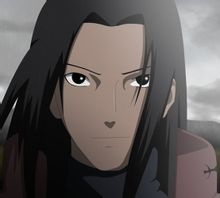
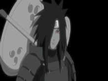
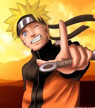
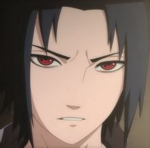
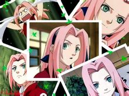
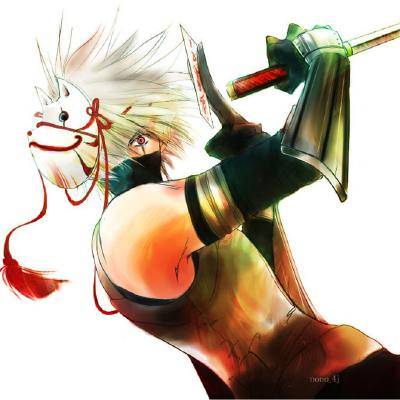
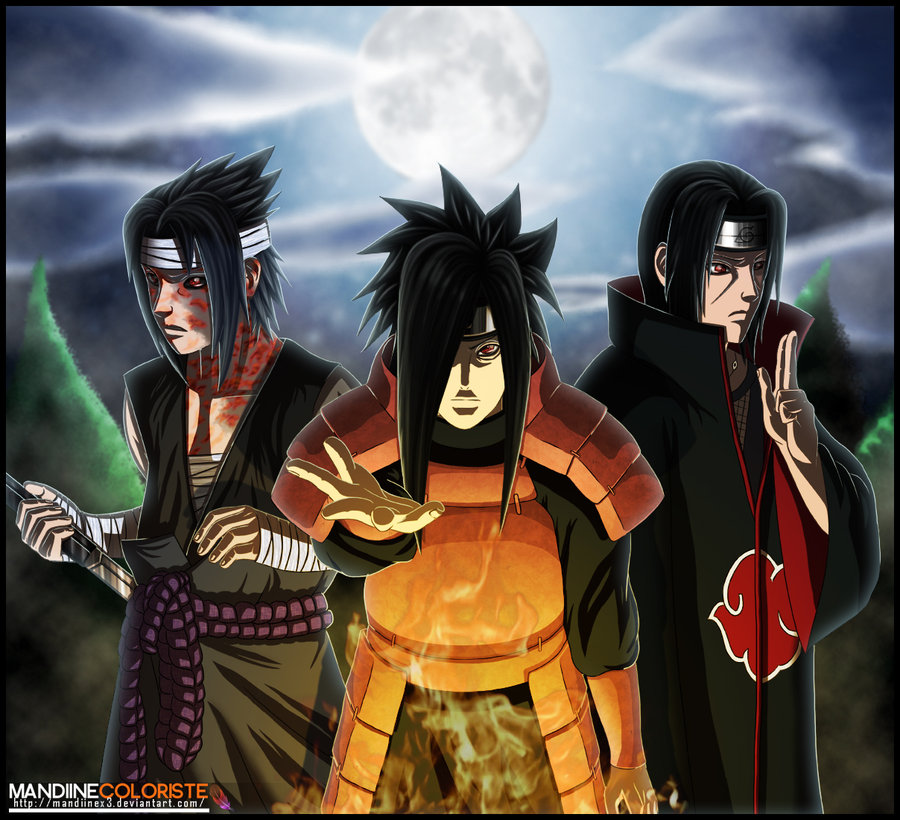
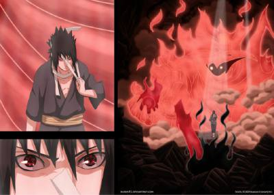
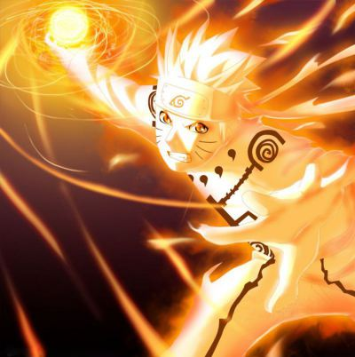

Naruto
火影忍者-人物介绍
首页
人物介绍
影音欣赏
漫画连载
火影忍者623
火影忍者622
火影忍者621
火影忍者620
火影忍者619
火影忍者618
火影忍者617
火影忍者616
最新动画
火影忍者523
火影忍者522
火影忍者521
火影忍者520
火影忍者519
火影忍者518
火影忍者517
火影忍者516
火影忍者515
火影MV
那时候，很温暖
燃！！！
Love Hurts
这次是真的。。。
六道佩恩！
火影剧场版
血狱
失落之塔
火之意志继承者
千手柱间
初代火影

千手一族的首领，火之国木叶村的创建者。千手柱间继承了六道仙人的仙人之体，其特有的遁术“木遁之术”，具有控制尾兽的能力，被忍界誉为“忍者之神”，凡见过其风采的人皆称其是“如同六道仙人一般的传说”。平定乱世，创立木叶，分配尾兽给五大国，并在终结之谷打败宇智波一族的首领宇智波斑，是宇智波斑唯一敬畏的忍者。
宇智波斑
木叶忍者村创立者之一

木叶忍者村创立者之一 , 实力极为强悍。与初代火影千手柱间同为木叶忍者村的创立者，也是成功开启永恒万花筒写轮眼的第一人。
漩涡鸣人
九尾人柱力

因为身上封印着邪恶的九尾妖狐，无父无母的他受尽了村人的冷眼与歧视，他下定决心要成为第六代火影，让所有人都认同他的存在，在旗木卡卡西老师的带领下，与佐助、小樱一起踏上了修行之路。 如今，他已经因为阻止佩恩袭击木叶而成为一名人人称道的英雄，并且在第四次忍界大战中发挥着举足轻重的作用。
宇智波佐助
宇智波天才

拥有写轮眼的宇智波一族的后裔，背负宇智波一族的血仇，岸本对其的定义是——复仇者。
春野樱
女主角

木叶中忍，五代火影千手纲手的弟子，木叶第一技师旗木卡卡西之徒，新一代出色医忍，原七班队友为漩涡鸣人和宇智波佐助，现七班队友为漩涡鸣人和佐井。
美图欣赏




热门分析
宇智波一族专题
Author name - Mar 14, 2013
(63)
木叶地图
Author name - Mar 13, 2013
(45)
柱间和斑
Author name - Mar 13, 2013
(36
)
火影漫画623话简析
Author name - Mar 9, 2013
(18)
永不停息的战斗
Author name - Mar 7, 2013
(27
)
火影FLASH小游戏
死神VS火影1.0
火影忍者大乱斗
Copyright© 2013
火影忍者
| Designed by
pc
{kind=link}
{kind=link}
{kind=link}